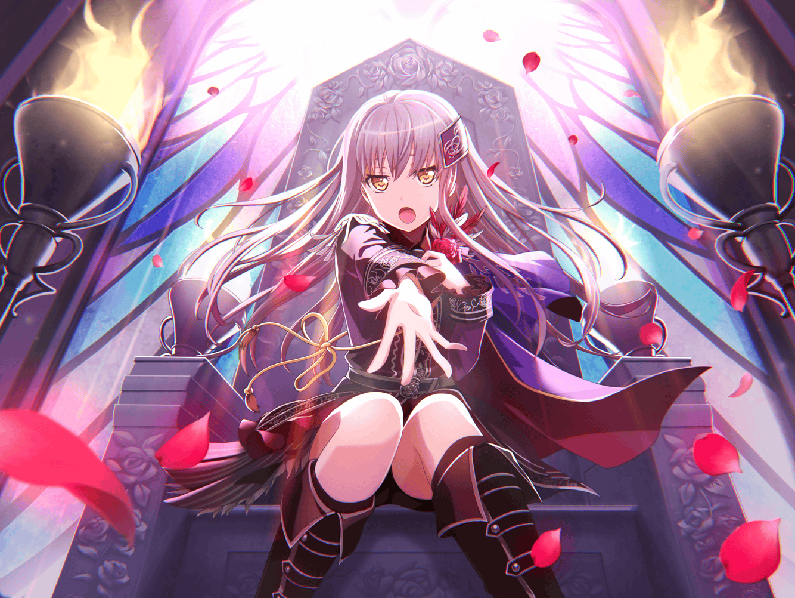

友希那
……あなたは
友希那
こんなところで会うなんて偶然ね
友希那
……そう、あなたも用事があるのね
友希那
私？
友希那
私は今から、スタジオで練習よ
友希那
ただ、少し早めに来すぎてしまったから、
時間つぶしに散歩をしているの
友希那
……ええ、学校のある日でも練習はかかせないわ
友希那
今のところは、
週に８回くらい練習しているわね
友希那
スタジオで合わせるのはもちろん、
個人練習もあるから
友希那
……そうね。
一応、毎日ということになるのかしら
友希那
一日、二回以上、練習をする日もあるし
友希那
……いえ、それほど大変じゃないわ
友希那
これくらいは普通のことだし、
もっと多くの練習を効率的にやらないと、
きっと私の求める領域にはたどり着けない
友希那
人生は１度きりだもの
友希那
後悔はしたくない……
やらずに諦めることもしたくない
友希那
だからこれくらいは、私にとって……
友希那
いいえ、
私達にとって、当然の練習量よ
友希那
それはメンバー全員もわかってる
友希那
Roseliaを結成したときに、決めたことだもの
友希那
私は、それを守れる人達を集めたつもりよ
友希那
……言ってなかったかしら？
友希那
Roseliaは、
私がメンバーを集めて結成したの
友希那
最初はソロで活動していたんだけど、
ひとりでは表現に限界を感じた……
友希那
でも、息抜きと同じように、
誰かとたまに組むというのは、私の流儀に反する……
友希那
だから上を目指す明確な意思と、
確かな実力を持ったメンバーが必要だった
友希那
そこで集まったのが、
今のメンバーというわけ
友希那
紗夜のギターにかける思いには、
鬼気迫るものがある
友希那
リサも本気になっているし……
友希那
あこも燐子も、
メンバーに入るために熱意を見せてくれた
友希那
悪くないメンバーだと思っているわ
友希那
そして初めてのライブの前に、
きちんと決意を固めてもらったから
友希那
……FUTURE WORLD FES．
に出るために、極限まで練習をできるかどうか
友希那
音楽以外のことをする暇はないけれど、
いいかどうか
友希那
そして……
友希那
Roseliaにすべてをかける覚悟はあるかどうか
友希那
……あなた、
私が結構厳しいことを言ってると思ってるでしょ？
友希那
女子高生には酷だと思ってるでしょ……？
友希那
でも将来に結果を残せるのは、
今を頑張っている人だけよ
友希那
だって未来は、
今の延長線上にあるのだから
友希那
……私の問いかけに
みんな、迷わず覚悟を決めてくれたわ
友希那
だから私も……覚悟を決めてる
友希那
練習についてこれないなら、引き止めはしないけれど……
友希那
私と一緒にやり切ってくれるなら、
このメンバーで頂点を目指すわ
友希那
まあ、ひとつ残念だったのは……
友希那
そういうことを話しているのに、
場所はファミリーレストランだったことね……
友希那
……ある意味、そこだけ女子高生らしい？
友希那
……どうなのかしらね。
少なくとも嬉しくはないけれど
友希那
それにファミリーレストランには、
二度といかないと誓っているわ
友希那
色々あってね
友希那
……ねえ。
さっきから笑って人の話を聞いてるけど、
あなただって他人事ではないのよ？
友希那
だって私達をライブハウスに誘ったのは、
あなただもの
友希那
こんな私達を誘うということは……
友希那
誘ったあなたにも、覚悟してもらわないといけないわ
友希那
私達は、中途半端なサポートなんていらない
友希那
あなたもやるのなら、
全力でサポートをしてちょうだい
友希那
そうすれば互いに高め合って、
いい関係になれると思う……
友希那
別に無理にとは言わないわ
嫌々サポートしてもらっても嬉しくないもの
友希那
それで、{{userName}}さん、あなたはどうするの……？
友希那
……そう、決意は決まったのね
その気持ち、ありがたく受け取るわ
友希那
では、私達と一緒にやり遂げましょう
友希那
誰も見たことがない高みでも、
このメンバーとあなたがいれば、必ず目指せる……
私はそう信じているわ